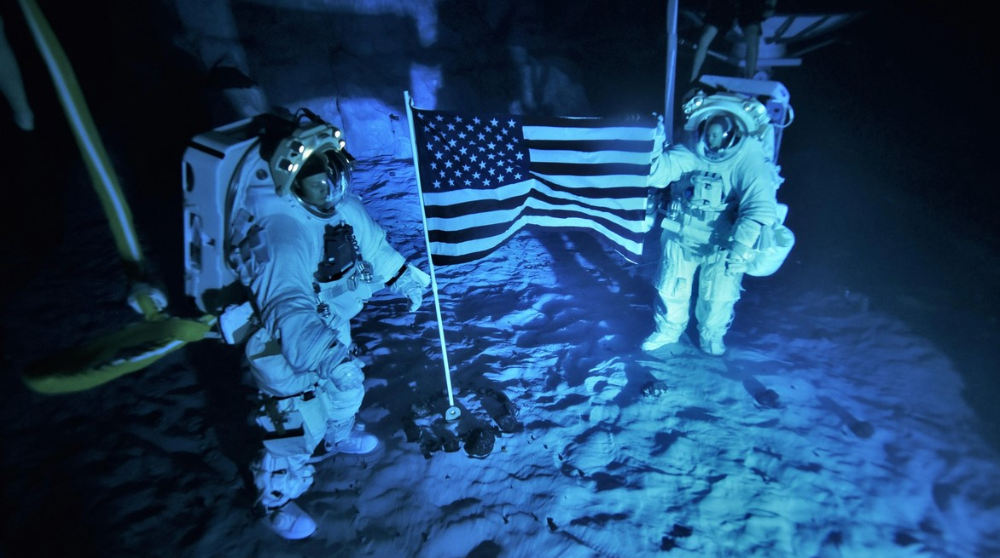
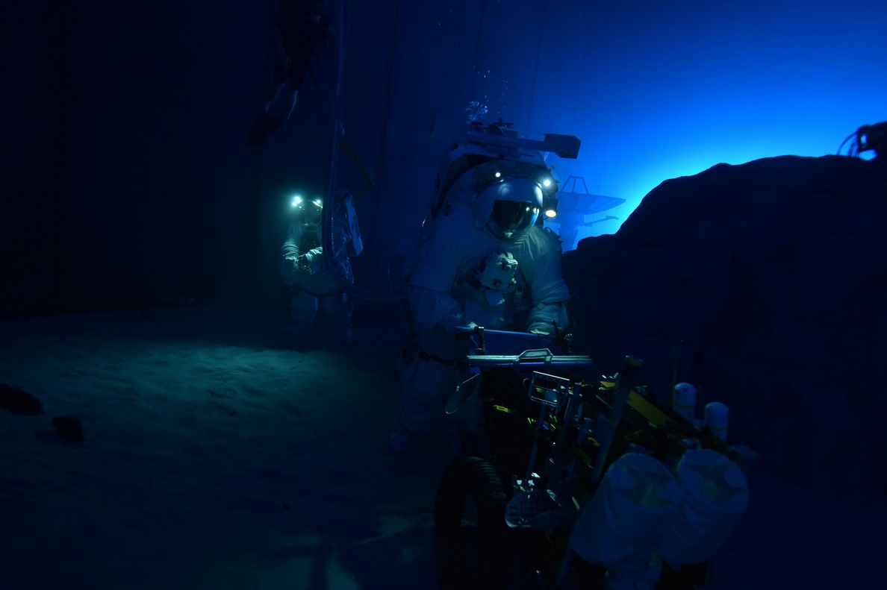
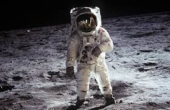
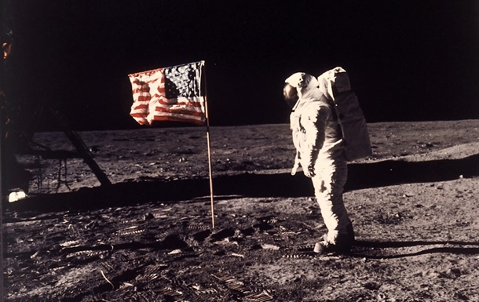
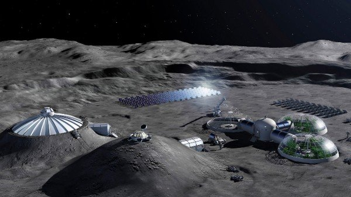
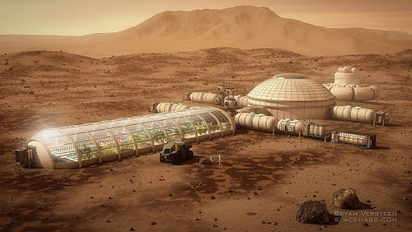
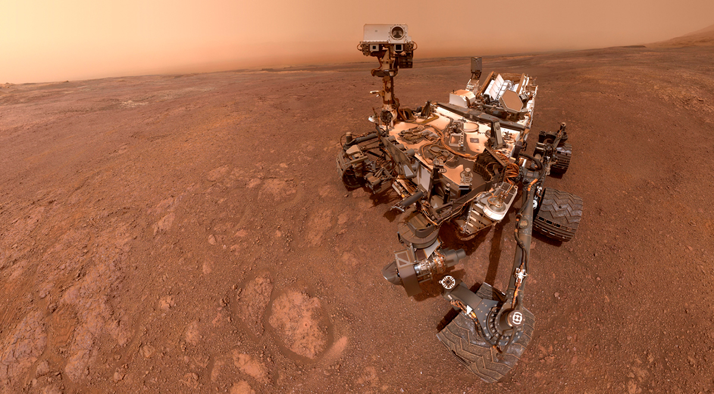
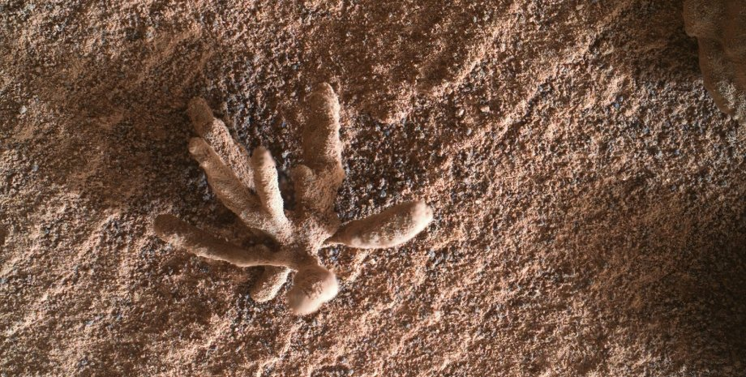

підчас холодної війни дві держави змагались це ссср і сша першими на місяць висадились росіяни їхня ракета називалась луна 9 вона висадила на місяць робота у 1966 році а другими були амереканці але вони були грандіозніші аполон 11 так називалась їх ракета вона у 1969 році висадила на поверхню місяця двух людей.
 перед тим як висадитись на місяць космонафтів готують тут на землі,великий темний холодни басейн з білим піском на дні ідеально імітує місяць і умови що на ньому люди вдягають скафандри і опускаються на дно і починають там виконувати ті завланя які мають буди виконані на місяці.
 і вже після того як космонафти готові їх відправляють на місяць вже не на його реалістичну імітацію а насправжній місяць де все вже по справжньому і зараз наса готує космонавтів для нового польоту на місяць цей політ буде відрізнятись тим що люди полетів на місяць мають там лишитись це справжня колонізація місяця.
 колонізація місяця у 2025 це лише підготовка до колонізації марса у 2030 році,місяць є суровим і не пригоднім до життя хоча грунт дуже добрий і в краторах є вода але на місяці сильні перепади температури і сильна радіація тому життя на місяці тяжкіше чим на марсі бо в марса є нормальна атмосфера але политіти на марс тяжкіше чим на місяць,місяць стане першим космічним об'єктом на якаму сможе жити людина а марс стане другим.
відомо всім що на марс вже літали роботи під назвою марсоходи першим з них був радіанський марсохід який висадився на поверхню марса у 1973 році це через рік після останьої висадки людини на місяць у 1972 році,перший марсохід коли висадився на марс зміг працювати лише 11 сикунд і зробив лише 1 фото.Один із марсоходів наса який висадився на поверхню марса у 2011 році вже 13 років їздить по його поверхні і все нам росповідає задопомогою цього марсоходу ми все знаєм про марс і імено цей робот зробив велике відкритя він знайшов на марсі засохлі кущі на яких були живі бактерії це свідче про те що марс не такий і мертвий як ми думаємо.
мертва та засохло-закамяніла квітка на поверхні марса.